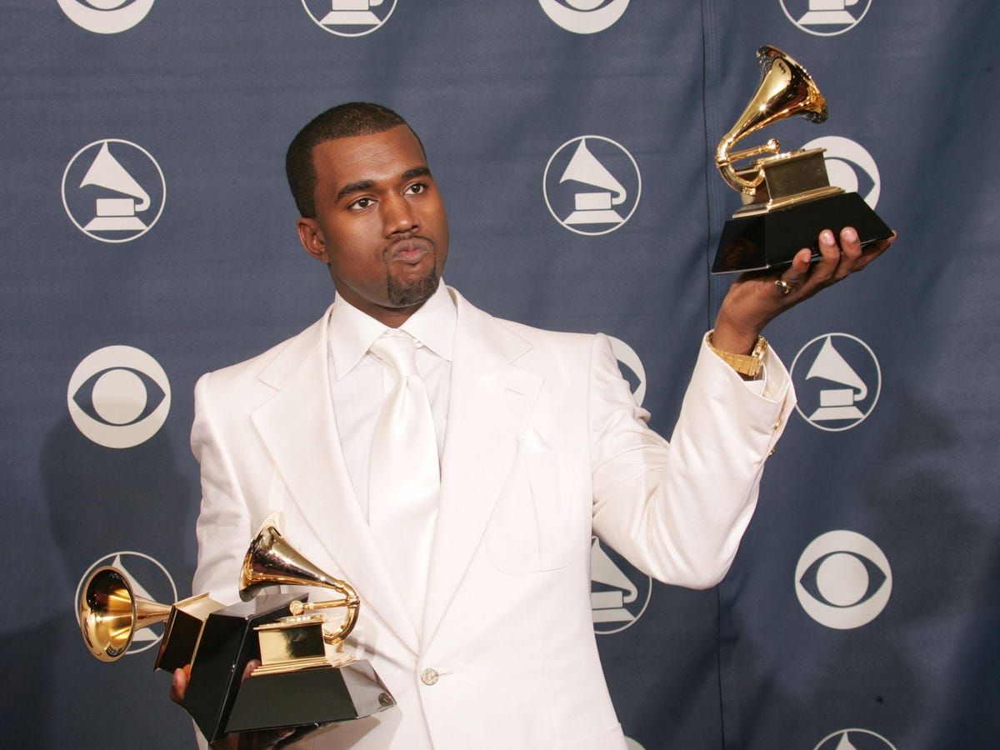
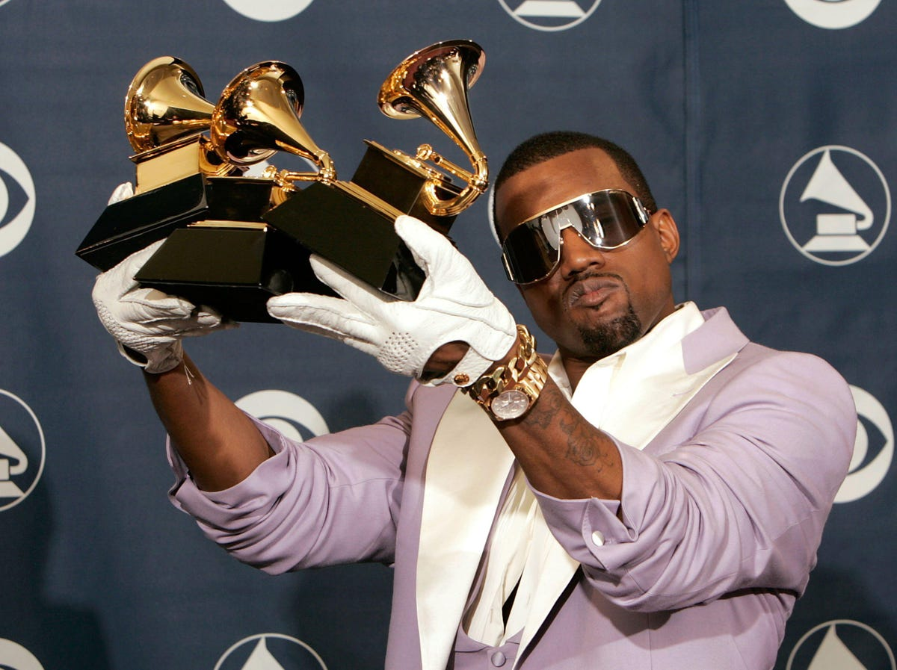

| Año | Categoría | Trabajo | Resultado |
|---|---|---|---|
| 2016 | Álbum del año | Views | Nominado |
| Mejor interpretación de rap | Pop Style | Nominado | |
| That Part | Nominado | ||
| Mejor interpretación de rap/sung | Ultralight Beam | Nominado | |
| Mejor canción de rap | Nominado | ||
| Mejor interpretación de rap/sung | Famous | Nominado | |
| Mejor canción de rap | Nominado | ||
| Mejor álbum de rap | The Life of Pablo | Nominado | |
| 2015 | Álbum del año | Beauty Behind the Madness | Nominado |
| Mejor interpretación de rap | All Day | Nominado | |
| Mejor canción de rap | Nominado | ||
| Mejor colaboración de rap/sung | One Man Can Change the World | Nominado | |
| 2014 | Bound 2 | Nominado | |
| Mejor canción de rap | Nominado | ||
| 2013 | New Slaves | Nominado | |
| Mejor álbum de rap | Yeezus | Nominado | |
| 2012 | Mejor canción de rap | Mercy | Nominado |
| Mejor interpretación de rap | Nominado | ||
| N***s in Paris | Ganador | ||
| Mejor canción de rap | Ganador | ||
| Mejor colaboración de rap/sung | No Church in the Wild | Ganador | |
| Mejor video musical en formato corto | Nominado | ||
| 2011 | Canción del año | All of the Lights | Nominado |
| Mejor colaboración de rap/sung | Ganador | ||
| Mejor canción de rap | Ganador | ||
| Otis | Nominado | ||
| Mejor interpretación de rap | Ganador | ||
| Mejor álbum de rap | My Beautiful Dark Twisted Fantasy | Ganador | |
| Watch the Throne | Nominado | ||
| 2010 | Mejor interpretación solista de rap | Power | Nominado |
| 2009 | Mejor canción de rap | Run This Town | Ganador |
| Mejor colaboración de rap/sung | Ganador | ||
| Mejor interpretación de rap por un dúo o grupo | Make Her Say | Nominado | |
| Amazing | Nominado | ||
| Mejor colaboración de rap/sung | Ego | Nominado | |
| Knock You Down | Nominado | ||
| 2008 | American Boy | Ganador | |
| Canción del año | Nominado | ||
| Mejor interpretación de rap por un dúo o grupo | Put On | Nominado | |
| Swagga Like Us | Ganador | ||
| Mejor canción de rap | Nominado | ||
| Álbum del año | Tha Carter II | Nominado | |
| 2007 | Graduation | Nominado | |
| Mejor álbum de rap | Ganador | ||
| Mejor canción de rap | Can't Tell Me Nothing | Nominado | |
| Good Life | Ganador | ||
| Mejor colaboración de rap/sung | Nominado | ||
| Mejor interpretación de rap por un dúo o grupo | Southside | Ganador | |
| Better Than I've Ever Been | Nominado | ||
| Mejor interpretación solista de rap | Stronger | Ganador | |
| 2005 | Gold Digger | Ganador | |
| Grabación del año | Nominado | ||
| Mejor canción de rap | Diamonds from Sierra Leone | Ganador | |
| Mejor álbum de rap | Late Registration | Ganador | |
| Álbum del año | Nominado | ||
| The Emancipation of Mimi | Nominado | ||
| Mejor colaboración de rap/sung | They Say | Nominado | |
| Mejor canción de R&B | Unbreakable | Nominado | |
| 2004 | You Don't Know My Name | Ganador | |
| Mejor canción de rap | Jesus Walks | Ganador | |
| Canción del año | Nominado | ||
| Mejor álbum de rap | The College Dropout | Ganador | |
| Álbum del año | Nominado | ||
| The Diary of Alicia Keys | Nominado | ||
| Mejor interpretación solista de rap | Through the Wire | Nominado | |
| Mejor colaboración de rap/sung | Slow Jamz | Nominado | |
| All Falls Down | Nominado | ||